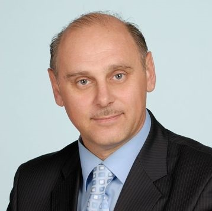

Lek. med. Piszczulin Aleskander
Homeopata - Irydolog - Okulista

Co to jest irydologia?
Irydologia jest naukowym kierunkiem w medycynie, który łączy w sobie problemy irydodiagnostyki, irydolofografii, irydorefleksoterapii, irydoterapii, chomeoterapii oraz irydogenetyki.
Irys, to z greckiego tęczówka Diagnosis - rozpoznanie chorób. Zatem irydodiagnostyka jest metodą diagnostyczną, która pozwala na całościową ocenę stanu zdrowia i dzięki takiemu spojrzeniu na pacjenta pomaga znaleźć przyczyny choroby. Zmiany chorobowe na tęczówce oka występują o wiele wcześniej niż odczuwanie przez pacjenta objawy. Każda choroba ma swój przebieg: od stanu bezobjawowego, przez stan rozwiniętych objawów chorobowych, stan inwazji, kiedy to pacjent odczuwa już dolegliwości, okres ustąpienia objawów chorobowych oraz okres rekonwalescencji. Dzięki temu na tęczówce można rozpoznać chorobowy stan ostry, stan podostry, przewlekły i destrukcyjny. Na podstawie analizy obydwu tęczówek można ocenić konstytucję danej tęczówki, umiejscowienie źrenic, ich konfigurację. Można również rozpoznać, które z narządów i układów zostały objęte procesem chorobowym. Bardzo korzystna dla procesu leczenia jest możliwość oceny skuteczności zastosowanej metody leczenia. Można ustalić z powodu jakiej substancji chemicznej nastąpiły zmiany w organiźmie, czy jakimi lekami chemicznymi zatruty jest pacjent.
Co to jest homeopatia?
Homeopatia jest to skuteczna metoda łagodnego i bezpiecznego leczenia prawie wszystkich dolegliwości dających objawy chorobowe. Celem homeopatii jest uzdrowienie człowieka przez wzmocnienie jego osłabionej siły witalnej, która jest niezbędna do uwolnienia go od czynników chorobotwórczych oraz przywrócenia harmonijnego funkcjonowania całego organizmu. Homeopatia oddziałuje na cały organizm, a nie tylko na wybrane jego części. Leczenie homeopatyczne uwzględnia zdolność chorego organizmu do reagowania na lek. Dla każdego wieku (od dzieciństwa do późnej starości) dobiera się, odpowiadający określonemu typowi konstytucji, specyfik homeopatyczny. Każdy pacjent inaczej przechodzi tę samą chorobę, dlatego otrzymuje swój indywidualnie dobrany lek. Jego fizjologia i patologia procesów, może być do siebie zbliżone, ale zawsze pozostaną wyjątkowe i niepowtarzalne dla pacjentów. Takie całościowe i zindywidualizowane podejście daje szansę na wyleczenie w krótkim czasie zarówno lekkich, jak i ciężkich chronicznych stanów chorobowych.
Środki stosowane przez klasyczną medycynę działają doraźnie i nie usuwają przyczyn choroby. Stosowanie antybiotyków najczęściej mija się z celem, jest bezskuteczne, a nawet może być szkodliwe, ponieważ osłabia układ immunologiczny pacjenta, co sprzyja powstawaniu chorób uczuleniowych czy reakcji alergicznych. Grozi też powstaniem antybiotykoodpornych szczepów bakterii. Leczenie antybiotykowe jest uzasadnione dopiero przy ciężkiej, zaawansowanej infekcji bakteryjnej, gdy organizm nie jest już zdolny do stworzenia mechanizmów samoobrony. W tym wypadku warto połączyć metody klasyczne z homeopatia, gdyż w czasie kiedy antybiotyk zwalcza drobnoustroje, homeopat wzmacnia podporność organizmu.
Leki homeopatyczne mają postać granulek lub mikrogranulek. Umieszcza się je pod językiem i trzyma aż do ich rozpuszczenia. Można też je rozpuścić w łyżeczce wody i przyjmować wg. zaleceń lekarza.
 Polskie Towarzystwo Homeopatii Klinicznej (www.pthk.pl)
Polskie Towarzystwo Homeopatii Klinicznej (www.pthk.pl)